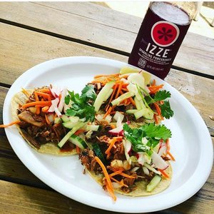

Welcome to the Magnificent Mushroom:
The Magnificent Mushroom is a sustainable neighborhood cafe that started out as a food truck in 2012 and opened up a brick and mortar in 2014. Our mission is to offer a sustainable dining option that is incredibly delicious and doesn't take itself too seriously.
We practice sustainability by:
- recycling and composting 95% of our waste
- offering a 100% plant-based menu using all-natural, local and organic ingredients whenever possible
- prioritizing a living wage and flexible work/life balance for our team
- offering 15% off to customers who ride their bike to the restaurant
- buying our employees a bike if they work for The Magnificent Mushroom for 2 years
- growing our own organic herbs on our patio garden
- repurposing materials to use in our restaurant space
- offering a seasonal menu and minimizing food waste by anticipating customer demand
- using 100% compostable to-go materials
- getting a five star certification in sustainability through the Green Dining Alliance (GDA)
- 3201 S Grand Ave St. Louis, MO 63118
- Our phone number is 314-300-8215
- Our hours are Monday - Saturday 11:30am-9pm
- Ping Pong Bar Above Lulu's Open All Day // Full Bar Open 5pm-12am
- Give the Perfect gift by purchasing a gift card
We are looking forward to seeing you. Come join us here:
